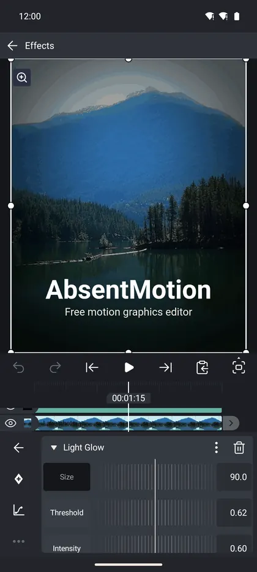

ইফেক্ট ব্যবহার করা
ইফেক্ট যোগ করুন, স্তূপ করুন, পুনরায় সাজান, লুকান, কপি করুন এবং অ্যানিমেট করুন, এবং ইফেক্ট লাইব্রেরিতে সঠিকটি খুঁজে নিন।
এই পেজে
একটি ইফেক্ট একটি লেয়ারের চেহারা বা গতিবিধি পরিবর্তন করে: একটি ব্লার, একটি গ্লো, একটি কালার পরিবর্তন, একটি শেক। একটি লেয়ারে আপনি যত চান তত ইফেক্ট থাকতে পারে। AbsentMotion-এ দশটি ক্যাটাগরিতে 187টি ইফেক্ট রয়েছে। এই ওয়েবসাইটের ইফেক্ট লাইব্রেরি প্রতিটি ইফেক্ট তার সব সেটিংসসহ তালিকাভুক্ত করে।
একটি ইফেক্ট যোগ করুন
- একটি লেয়ার নির্বাচন করুন।
- টুল গ্রিডে Effects ট্যাপ করুন।
- তালিকার শেষে Add Effect ট্যাপ করুন। Effects Library খুলে যায়।
- একটি ইফেক্ট ট্যাপ করুন। এটি তার স্ট্যান্ডার্ড সেটিংসসহ যোগ হয় এবং সাথে সাথে তার সেটিংস খুলে যায়।
প্রথমে একটি ইফেক্ট সম্পর্কে পড়তে, এর টাইলে চাপ দিয়ে ধরে রাখুন। একটি পৃষ্ঠা খুলে যায় যেখানে একটি অ্যানিমেটেড প্রিভিউ, একটি বর্ণনা, পছন্দের হিসেবে চিহ্নিত করার জন্য একটি তারা, + Standard Settings এবং কয়েকটি ইফেক্টের জন্য রেডিমেড প্রিসেট থাকে।

Effects Library
- উপরে একটি সার্চ বক্স ("Search") আছে যা প্রথমে নাম, তারপর বর্ণনার সাথে মিলে এবং AI টুল ও প্রিসেটও খুঁজে পায়।
- প্রস্তাবিত ইফেক্টের একটি স্ট্রিপ (Chroma Key, Blur এবং Glow), আপনার Recent বা Favorite ইফেক্টের একটি গ্রিড (দুটি ছোট আইকন দিয়ে সুইচ করুন), তারপর ক্যাটাগরিগুলো।
- ক্যাটাগরি: Color, Blur, Distort, Stylize, Noise, Repeat, Key, Move, 3D এবং Text। সর্বশেষ ভার্সনে যোগ করা ইফেক্টের জন্য একটি New ক্যাটাগরি দেখা যায়। যে লেয়ারে সাউন্ড আছে তাদের জন্য একটি Audio ক্যাটাগরি দেখা যায়, এবং AI-তে AI টুলগুলো থাকে।
- যে ইফেক্ট আপনার ফোনে চলতে পারে না তা ধূসর দেখায়।
একটি ইফেক্টের সেটিংস
খুলতে তালিকায় একটি ইফেক্ট ট্যাপ করুন। এর হেডারে ইফেক্টের নাম, একটি তিন-ডট মেনু এবং একটি ট্র্যাশ ক্যান থাকে।
- প্রতিটি সংখ্যার একটি রুলার এবং একটি ভ্যালু বক্স থাকে। কীফ্রেম বোতামের টার্গেট করতে একটি সেটিংসের নাম ট্যাপ করুন। যে সেটিংসগুলো পজিশন, সেগুলো প্রিভিউতে ড্র্যাগ করে সরানো যায়।
- একটি কালার সেটিংস দ্রুত সোয়াচের একটি সারি এবং সঠিক কালারের জন্য একটি ফিল্ড খোলে।
- একটি সুইচ একটি অপশন চালু বা বন্ধ করে। একটি চয়েস একটি তালিকা খোলে।
- প্যালেট সেটিং (প্যালেট ম্যাপ ও রেট্রো ডিদার-এ) তার সব কালার দেখায়। প্রিসেট-এ PICO-8, Game Boy ও Commodore 64-এর মতো পুরোনো কনসোল ও কম্পিউটারের প্যালেট আছে। ইমপোর্ট একটি প্যালেট ফাইল পড়ে: ২৫৬টি পর্যন্ত কালারের ছবি (বেশি হলে ২৫৬-এ কমানো হয়), Photoshop .ase বা .act, GIMP .gpl, .pal, .hex বা Paint.NET .txt, যেমন Lospec থেকে ডাউনলোড করা প্যালেট।
- তিন-ডট মেনুতে Effect Info, Reset to Defaults, Duplicate, Copy Effect এবং Paste Effect Values (যখন আপনি একই ধরনের একটি ইফেক্ট কপি করেছেন) থাকে।
- ট্র্যাশ ক্যান ইফেক্টটি সরিয়ে দেয়। বন্ধ করতে হেডার ট্যাপ করুন।
যদি লেয়ারটি অন্য লেয়ারের প্যারেন্ট হয়, তাহলে ইফেক্টের উপরে একটি Apply to Children সুইচ দেখা যায় (Move বা Repeat ইফেক্টের জন্য নয়)।
ইফেক্ট তালিকা
- ক্রম গুরুত্বপূর্ণ: উপরের ইফেক্টগুলো প্রথমে প্রয়োগ হয়। ক্রম পরিবর্তন করতে একটি সারির গ্রিপ (Reorder) ড্র্যাগ করুন।
- চোখ (Visibility) একটি ইফেক্ট না মুছে লুকায়।
- বাম কলামে More-এ Copy Effects (আপনি কোনগুলো চান টিক দিন) এবং Paste Effect বা Paste Effects থাকে, যা নির্বাচিত লেয়ারের তালিকার শেষে কপি করা ইফেক্টগুলো যোগ করে।
একসাথে অনেক লেয়ারে ইফেক্ট
একটি লেয়ারে ইফেক্টগুলো কপি করুন। তারপর কয়েকটি লেয়ার নির্বাচন করুন (Layer menus and multi-select দেখুন), নিচের বারে Effects ট্যাপ করুন এবং Paste All Effects বেছে নিন। সাউন্ড, ক্যামেরা এবং নাল লেয়ার বাদ পড়ে।
একটি ইফেক্ট অ্যানিমেট করুন
একটি ইফেক্টের প্রতিটি সংখ্যা, কালার এবং পজিশনে কীফ্রেম থাকতে পারে। ইফেক্টটি খুলুন, সেটিংসের নাম ট্যাপ করুন, প্লেহেড যেখানে চান সেখানে রাখুন এবং কীফ্রেম বোতাম ট্যাপ করুন। ইজিং বোতামটি কীফ্রেমের মধ্যবর্তী গতিবিধি আকার দেয়। Keyframes and easing দেখুন।
ইফেক্টের ভেতরে প্রিসেট
চারটি টেক্সট ইফেক্ট রেডিমেড প্রিসেটসহ আসে: Text Progress (Typewriter, Fade In by Word, Slide Up by Letter, Pop In), Text Transform (Wave, Spin Cascade), Text Randomizer (Scramble) এবং Count Up/Down (Count Up)। লাইব্রেরিতে ইফেক্টটি চাপ দিয়ে ধরে রাখুন এবং PRESET-এর অধীনে প্রিসেটটি বেছে নিন।
এগুলো একটি লেয়ারের Presets টুল থেকে আলাদা, যা আপনার নিজের লুক সংরক্ষণ করে: Assets, templates and presets দেখুন।
বিশেষ ধরনের ইফেক্ট
- Move ইফেক্ট (Auto-Shake, Oscillate, Swing, Spin, Random Displacement, Random Jitter, Pulse, Echo, Offset, Move Along Path, True Motion Blur) নিজে থেকেই একটি লেয়ার অ্যানিমেট করে।
- Repeat ইফেক্ট একটি লাইন, একটি বৃত্ত, একটি গ্রিড, একটি পথ বরাবর বা ছড়িয়ে ছিটিয়ে কপি তৈরি করে।
- 3D ইফেক্ট একটি লেয়ারকে একটি কিউব, স্ফিয়ার, টরাস এবং অন্যান্য সলিডে পরিণত করে। Rotate ট্যাব তখন ইফেক্টের রোটেশন নিয়ন্ত্রণ করে।
- Key ইফেক্ট (Chroma Key, Luma Key) একটি কালার বা একটি লেয়ারের অন্ধকার ও উজ্জ্বল অংশ সরিয়ে দেয়, উদাহরণস্বরূপ একটি গ্রিন স্ক্রিন।
- Text ইফেক্ট (Text Progress, Text Transform, Text Randomizer, Count Up/Down, Timecode) অক্ষর ধরে ধরে টেক্সট অ্যানিমেট করে। Text and fonts দেখুন।
- Audio ইফেক্ট সাউন্ডে কাজ করে: Audio দেখুন।
- AI টুল (Remove Background, Reduce Noise) ফোনে চলে: AI tools দেখুন।
ক্রপ, একটি কী ইফেক্ট, লেয়ারের কিনারা কেটে দেয়। ছবি ও ভিডিওতে একটি ক্রপ বোতামও আছে যা ক্যানভাসে ক্রপ দেখায়: লেয়ার টুলস দেখুন।
টিপস
- অনেক ইফেক্টে প্রিভিউ ধীর হয়ে গেলে Preview Quality Half বা Quarter-এ সুইচ করুন। এক্সপোর্ট প্রভাবিত হয় না।